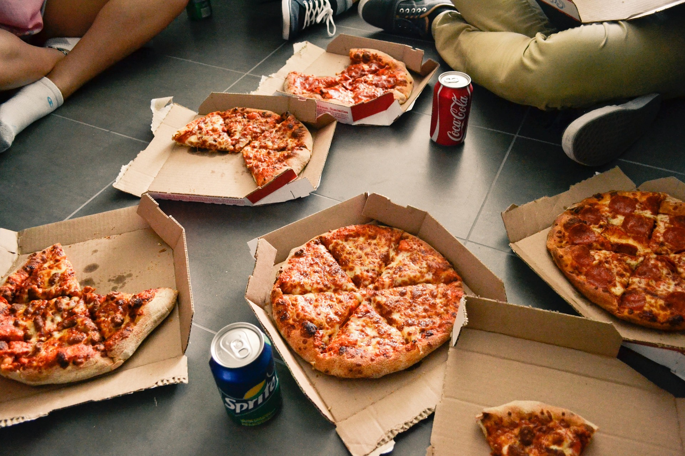

Description
Not so shockingly, New York-style pizza hails from New York City.
It’s known for its circular shape, cut into huge wedges with a thin
and foldable (but still crisp) crust and topped with mozzarella cheese.
Ingredients
Dough
- Yeast
- Flour
- Water
- Olive-Oil
- Salt
- Sugar
Sauce
- Tomatoes
- Pepper
- Garlic
- Salt
Others
- Pepperoni
- Mozzarella Cheese
- Oregano
Steps
- Make the dough: Activate the yeast and add all the dough ingredients
to a big bowl. Stir to combine, then knead for five minutes. Put the
dough back in the bowl and let it double in size.
- Roll it out: On a floured surface, flatten and stretch the dough into
a 12” circle.
- Top the pizza: Spread sauce over dough, sprinkle with herbs, and add
cheese and other toppings.
- Bake: Cook for 12–15 minutes in a 475 degree F oven.